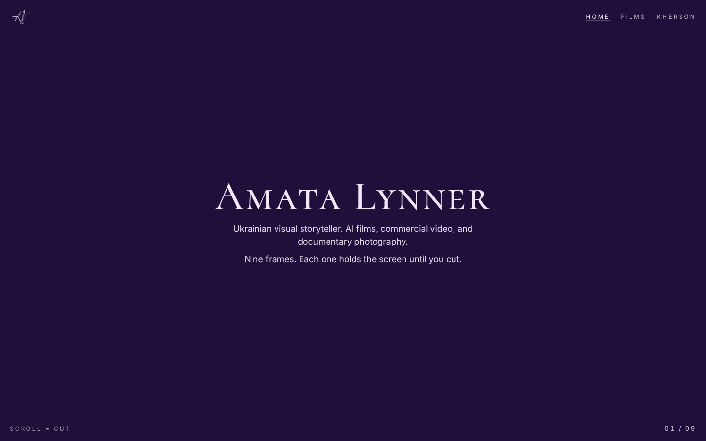
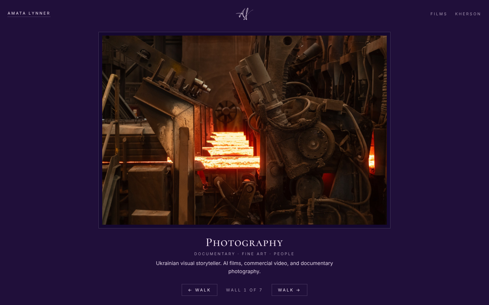
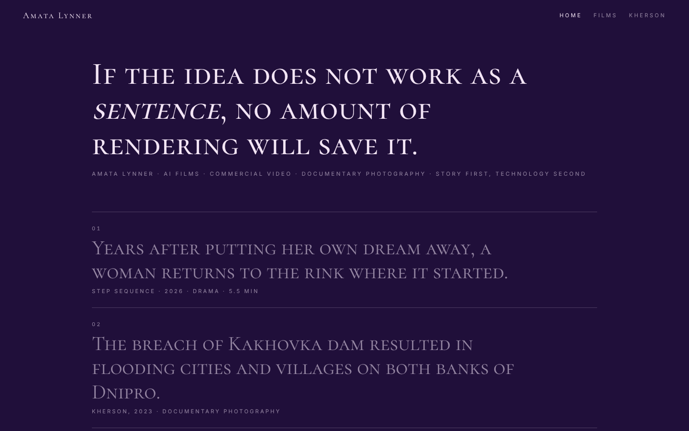
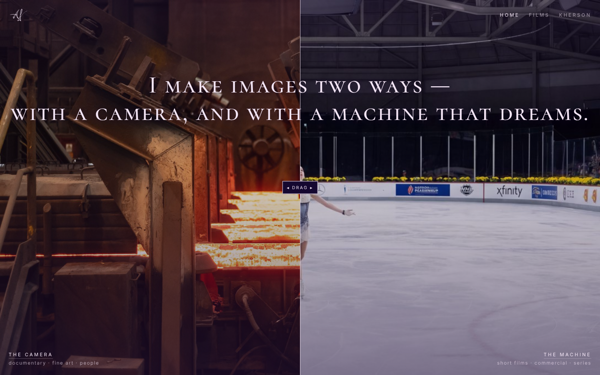

C · radically typographic
Sentence First
Her rule — "if the idea does not work as a sentence, no amount of rendering will save it" — becomes the interface. Works are loglines set huge; the image rises behind the words only as proof.
Remembered: a sentence, and the filmmaker who writes first.

D · identity as architecture
Two Ways
"I make images two ways — with a camera, and with a machine that dreams." The home is one diptych with a draggable seam between a photograph and an AI frame; the seam runs through every page.
Remembered: dragging the line and watching the photograph become the dream.